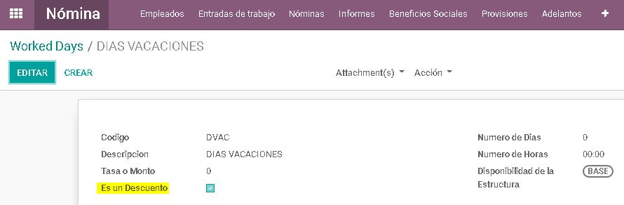
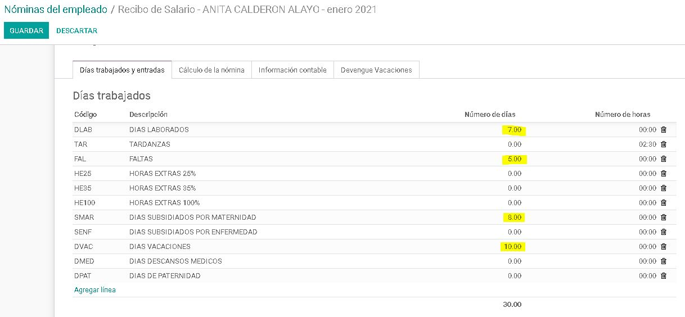
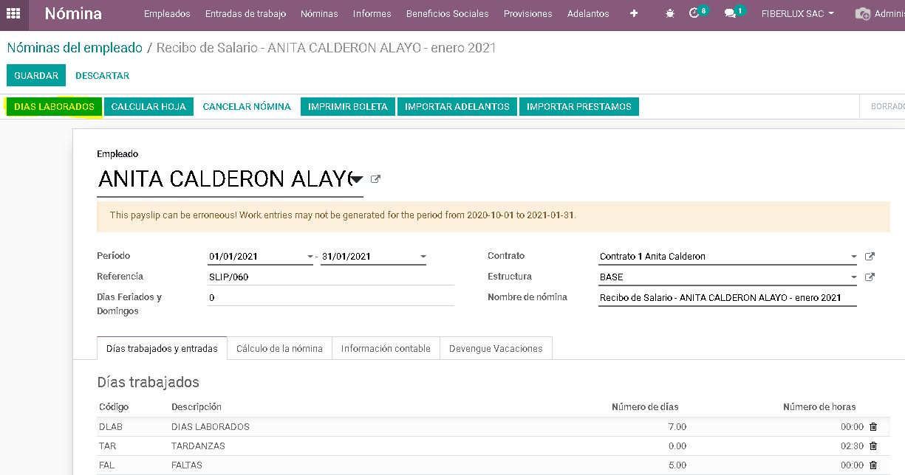

<section class="oe_container lead">
	<div>
		<div>
			<p class="oe_slogan" style="color: #49a3fe;font-size: 35px;font-style: italic;font-weight:bolder;">Calculo de Dias Laborados Automatico</p>
			<p class="oe_slogan">Agregando campo Es un Descuento en Tipos de Worked Days.</p>
			
			<p class="oe_slogan">Al modificar las lineas de Worked Days sera necesario presionar el boton de Dias Laborados de la Nomina</p>
			
			
		</div>
	</div>